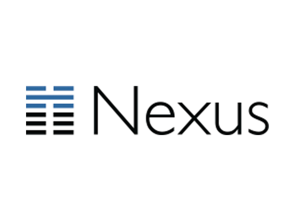
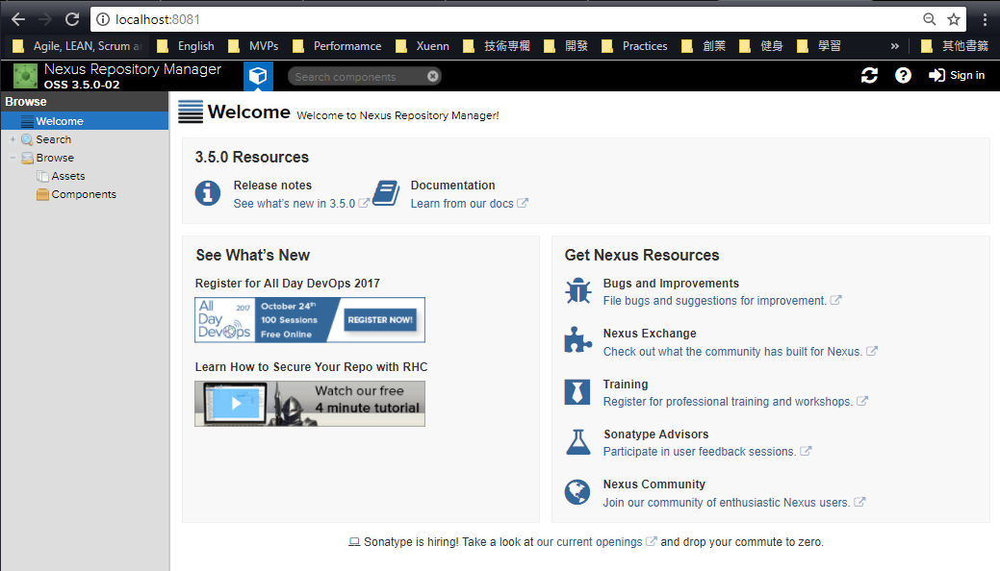
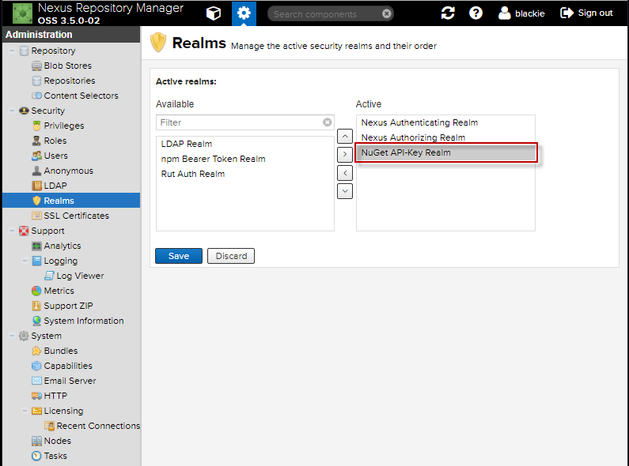
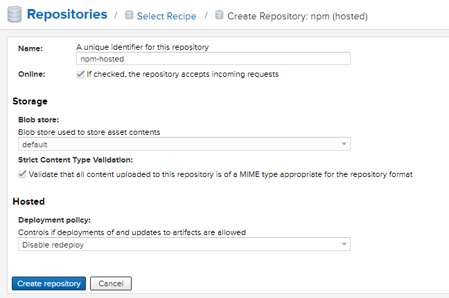

介紹另一個免費的 Univeral Packages Managment Tool - Nexus Repository Manager

Nexus Repository Manager 也是一套提供多種 Repository 類型的套件管理框架並可自行架設服務的工具。開源版(OSS) 就免費提供了以下 Feed 的種類:
- Maven
- npm
- Bower
- NuGet
- Docker
- PyPI
- RubyGems.
官方甚至還將 JFrog Artifactory OSS 設定為對手來比較一下:
而付費版則是強化了整合與HA的機制，不同的是 Nexus Repository Manager 沒有 SaaS 版本。
其他同性質的 Artifacts Management Tools 如下:
- JFrog - Universal Artifact Repository Manager
- Using Package from Private NuGet Server in TFS2017
- Using Package from Private NPM Regisry in TFS2017
- Using Package from Maven and Package Management in TFS2017
- Another Free Universal Package Manager - ProGet
Setup Nexus
從官網下載 Nexus Repository Manager OSS 3.x 後即解壓縮該檔案至目錄夾內。
並透過命令列至 bin 資料夾內輸入以下指令:
nexus.exe /run
看到上方運行起來後至預設網站入口 http://localhost:8081 即可看到該網頁:

Create New User
預設的管理者帳號為 admin, 密碼為 admin123。登入後可以新增其他角色:
完成後即可看到該角色新增至清單中
Repository and Publish Package to Nexus FSeeds
而我們也可以看到當前預設開好的 Repository 有哪些 :
介紹一下三種類型：
- hosted:
本機倉儲庫，通常會拿來部署自己的組件/套件到這。 - proxy:
代理倉儲庫，它们被用来代理遠端他人或官方的套件，如NuGet官方的 Registry。 - group:
倉儲庫组，用来合併多個 hosted/proxy 倉儲庫，通常配置成 maven 或是 npm 依賴的倉儲庫組。
系統預設會幫我們建立好 Maven 與 NuGet 的 Repository，而接下來我們將逐一嘗試 NuGet, npm 與 Maven 的套件上傳。
NuGet
這邊 NuGet 的 Package 建立與上傳方式細節請參考Using Package from Private NuGet Server in TFS2017，以下只節錄重點修改：
確認當前有可使用的 NuGet Repository Feed :
而我們可以透過以下指令建立 NuGet Repo 的連線:
nuget.exe sources add -name “Nexus” -source “http://localhost:8081/repository/nuget-hosted/"
接著我們將先介紹如何產生 apikey。申請 NuGet API Key 只需兩個步驟:
將 NuGet API Key Realm 設為啟用:

產生當前帳號的 API Key :
然後執行下面指令，將產生的 apikey 加入當前環境 :
nuget.exe setapikey

接著至欲上傳的套件下執行該指令上傳即可:
如果不申請 NuGet API Token 則是用預設帳號密碼也可以上傳:
完成後可以從看到下面的畫面:

npm
使用 npm 的 Package 建立與上傳方式細節請參考 Using Package from Private NPM Regisry in TFS2017
由於 npm feed 預設沒有建立，所以要自己手動新增:

這邊有兩種連線認證方式可透過 帳號密碼產生Auth認證碼 或是額外啟用 npm Realm and Login 的方式直接輸入帳號密碼登入。
這邊簡單介紹一下 _auth 這部分的產生是要透過當前帳號密碼並加密自己產生的:
The _auth variable has to be generated by base64-encoding the string of username:password. You can create this encoded string with the command line call to openssl.
這邊可以參考官方的教學，以下 Windows 環境採用預先安裝好的 certutil.aspx) 執行步驟:
建立一個
透過 certutil 與命令列執行以下指令:
certutil /encode

產生的內容會如下:
將中間的內容貼入 .npmrc 的 _auth 設定即可
透過任一種方式設定完成連線認證即可成功上傳套件:
完成上傳的套件如下:
Maven
詳細的 Maven Package 製作可以參考 Using Package from Maven and Package Management in TFS2017。
這邊因為預設安裝已經有安裝好 Maven Registry Feed 了，所以我們可以將 release 與 snapshot 的部分設定到本機開發環境中:
pom.xml
1 | <project xmlns="http://maven.apache.org/POM/4.0.0" xmlns:xsi="http://www.w3.org/2001/XMLSchema-instance" xsi:schemaLocation="http://maven.apache.org/POM/4.0.0 http://maven.apache.org/maven-v4_0_0.xsd"> |
setting.xml
1 | <?xml version="1.0" encoding="UTF-8"?> |
接著只要輸入下面指令完成上傳:
mvn deploy

套件至網頁如下呈現: